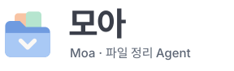
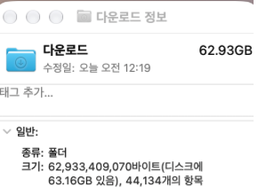
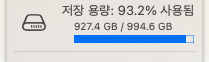
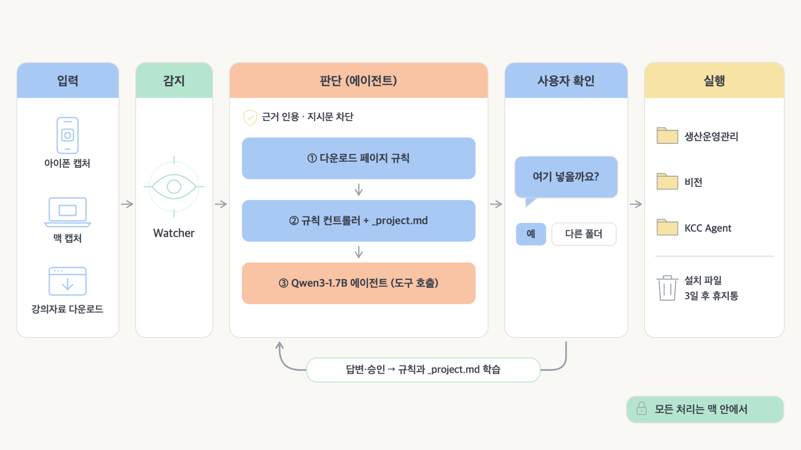
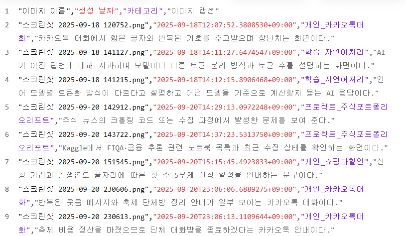
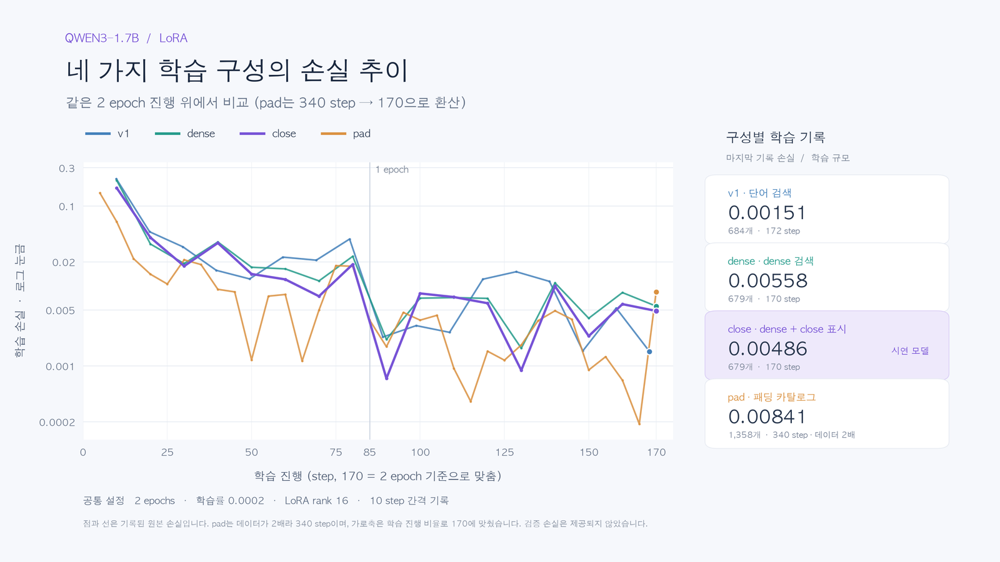
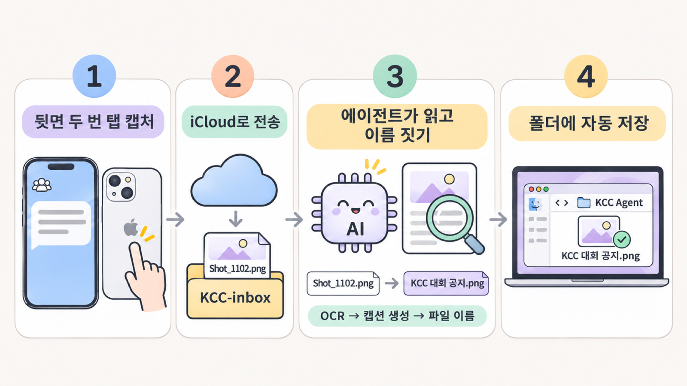
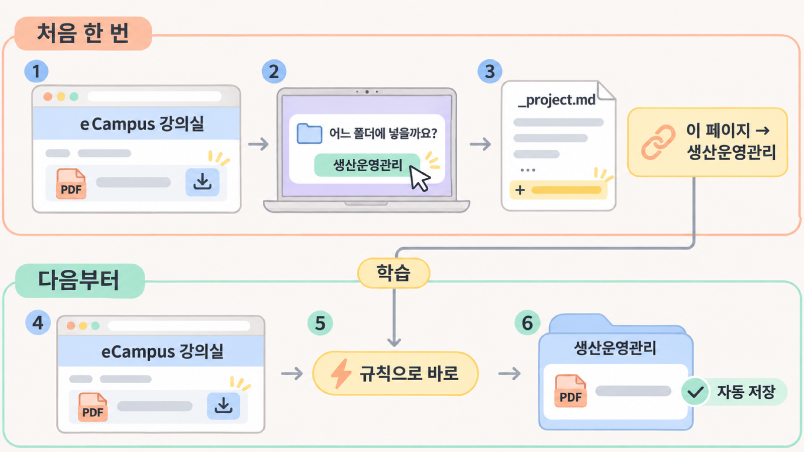
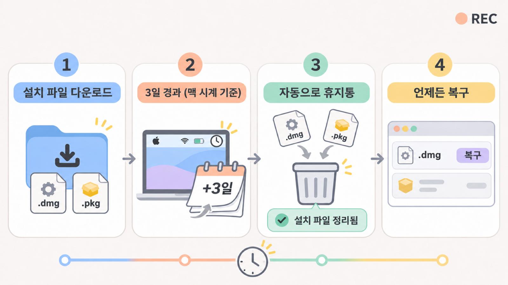

KCC 공지 캡처
아이폰에서 찍어 iCloud로 맥에 들어온 캡처. 어느 프로젝트 자료인지 확인한 뒤 이름을 붙여 저장한다.
맥락 확인
다운로드, 맥 스크린샷, iCloud로 들어온 아이폰 캡처까지.
모아가 내용을 읽고 이름을 붙여, 알맞은 폴더에 정리해요.
헷갈리면 모아서 물어보고, 알려준 기준을 배워요.
문제에서 실제 시연과 검증 결과까지 한 흐름으로 보여드립니다.
저장할 때는 목적을 알지만,
나중에는 파일 이름만으로
맥락을 되찾기 어렵다.


아이폰에서 찍어 iCloud로 맥에 들어온 캡처. 어느 프로젝트 자료인지 확인한 뒤 이름을 붙여 저장한다.
맥락 확인과제·강의 자료 다운로드. 기존 과목 폴더와 대조하고, 한 번 알려준 기준은 다음에도 쓴다.
폴더 연결잠깐 쓰고 마는 .dmg·.pkg. 3일 뒤 휴지통으로 옮기고, 비우기 전까지 복구 경로를 남긴다.
수명 관리규칙·날짜·본문에 따른 분류
LLM 분류·검토·되돌리기
요약·링크 기반 정리 뷰
검증 가설파일을 작업 맥락에 연결하면서, 필요한 관계를 지킨 채 정리할 수 있는가?
새 파일을 곧바로 옮기지 않고, 근거를 먼저 모읍니다.
Downloads · Desktop
iCloud로 들어온 파일
이름 · 형식 · 본문
이미지는 OCR
기존 폴더와
_project.md 지침 대조
규칙을 먼저 적용하고
필요하면 모델 호출
근거·목적지·이동 계획을 함께 보여준다.
계획 미리보기분류 대기에 두고, 질문을 모아 사용자가 폴더를 정한다.
질문 / 보류실행기가 권한·경로를 다시 확인해 이동한다.
실행 저널
모델은 계획을 제안하고, 파일 변경은 승인 뒤 실행기가 맡습니다. 답변·승인은 다시 규칙으로 학습됩니다.
수집 평가 27건에서 ToolHost가 받아들인 호출 비율


허용 가능한 도구 호출
반복 호출 37회 → 0회
화면은 데모 기능 구조를 요약한 예시입니다.

분류가 모호하면 근거를 보여주고 사용자가 고릅니다. 시연에서는 현재 구현에서 실제로 작동하는 단계만 실행합니다.

처음 한 번 답하면, 같은 페이지 다운로드는 다음부터 바로 정리됩니다.

휴지통을 비우기 전까지는 원래 자리로 되돌릴 수 있습니다.